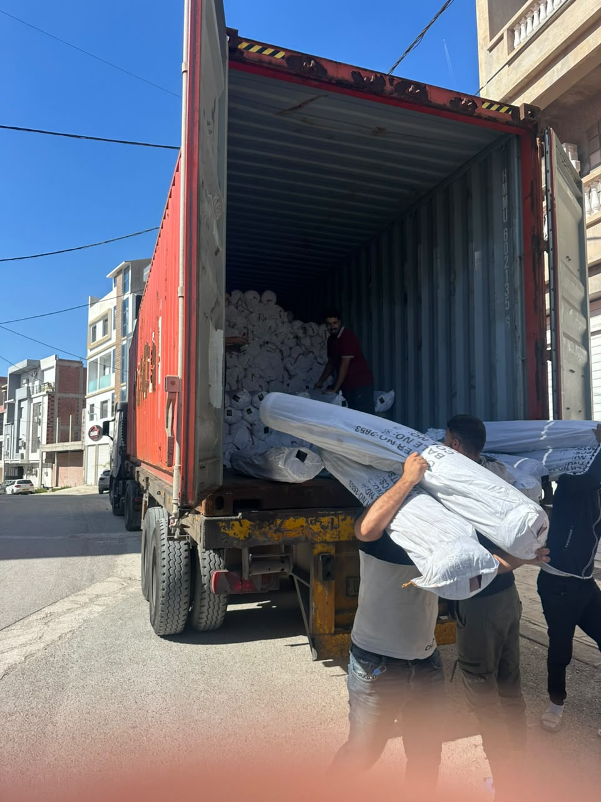

خطوة واعدة في سوق المنسوجات: انطلاق شركة Mermtex لاستيراد الأقمشة من قلب قسنطينة
في خطوة استراتيجية تهدف إلى تلبية الطلب المتزايد على المنسوجات الراقية في السوق الجزائري، أعلنت شركة Mermtex عن إطلاق عمل رسميًا مع مطلع عام 2026، متخذة من عاصمة الشرق، مدينة قسنطينة العريقة، مقرًا رئيسيًا لعملياتها. وجاء هذا الإطلاق ليمثل جسرًا تجاريًا جديدًا يربط بين جودة التصنيع العالمي واحتياجات السوق المحلية.
لماذا مدينة قسنطينة؟
لم يكن اختيار مدينة قسنطينة كمركز رئيسي للشركة وليد الصدفة، بل جاء بناءً على دراسة جغرافية واقتصادية دقيقة:
الموقع الاستراتيجي: تعد قسنطينة القطب الاقتصادي والنبض التجاري لمنطقة الشرق الجزائري، مما يسهل عمليات التوزيع واللوجستيات لجميع الولايات المجاورة.
الإرث الثقافي: تشتهر المدينة تاريخيًا بقطاع الحرف والخياطة التقليدية والعصرية (مثل قندورة الفرقاني القسنطينية)، مما يجعلها السوق الأكثر تقديرًا للأقمشة الفاخرة والخامات المتميزة.

تحالفات مباشرة مع كبرى المصانع الصينية
بالتزامن مع انطلاقتها القوية في عام 2026، نجحت إدارة شركة Mermtex في إبرام تعاقدات استراتيجية ومباشرة مع نخبة من كبرى المصانع الصينية الرائدة في قطاع النسيج. هذه الشراكات المباشرة بدون وسيط تضمن لزبائن الشركة ميزتين تنافسيتين:
* أسعار جملة تنافسية: توفر هامش ربح ممتاز للتجار وأصحاب المصانع المحلية لتعزيز قدراتهم التنافسية.
* استدامة التوريد: تدفق مستمر وضخم للسلع لتلبية الطلبيات الكبيرة والمستعجلة دون انقطاع.
